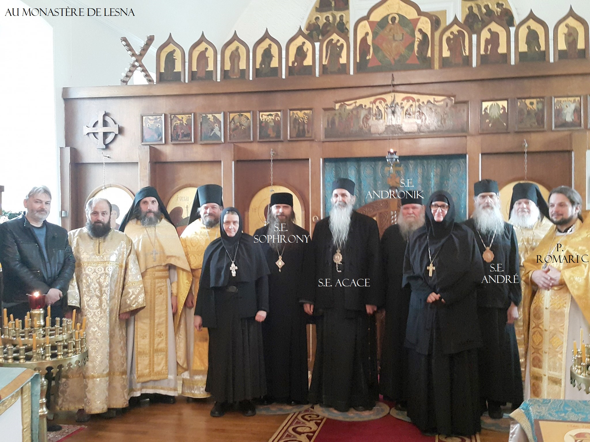

Sur cette page, vous trouverez ce qui concerne les VCO, c'est à dire les Vrais Chrétiens Orthodoxes. Nous sommes les seuls chrétiens qui sommes restés fidèles à la Tradition de l'Eglise et ainsi à la vrai foi inaltérée de l'Eglise Une Sainte Catholique et Apostolique.
